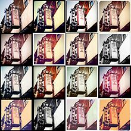

Início | Empresa | Funcionalidades | Polêmica | No Brasil | Ver também | Referências | Ligações externas
O Instagram é uma rede social online de compartilhamento de fotos e vídeos entre seus usuários, que permite aplicar filtros digitais e compartilhá-los em uma variedade de serviços de redes sociais, como Facebook, Twitter, Tumblr e Flickr.[6] Originalmente, uma característica distintiva era a limitação das fotos para uma forma quadrada, semelhante ao Kodak Instamatic e de câmeras Polaroid, em contraste com a relação a proporção de tela de 16:9 tipicamente usada por câmeras de dispositivos móveis. Contudo, desde a versão 7.5, lançada em agosto de 2015, podem ser enviadas mídias em qualquer proporção. Os vídeos foram permitidos na rede em junho de 2013, com um limite de 15 segundos e uma resolução fixa de 640x640; desde julho de 2015, permite-se o envio de vídeos em 1080p, e pode-se também publicar gravações de até 60 segundos, desde janeiro de 2016.[7] O Instagram foi criado por Kevin Systrom e Mike Krieger e lançado em outubro de 2010. O serviço rapidamente ganhou popularidade, com mais de 100 milhões de usuários ativos em abril de 2012.[8][9] O Instagram é distribuído através da Apple App Store, Google Play e Windows Phone Store.[10] O suporte foi originalmente disponível apenas para o iPhone, iPad e iPod Touch; em abril de 2012 foi adicionado suporte para Android's com câmera. Aplicativos de terceiros do Instagram estão disponíveis para BlackBerry 10 e dispositivos Nokia Symbian.[11][12] Em 22 de outubro de 2013, durante o Nokia World em Abu Dhabi, Emirados Árabes Unidos, Kevin Systrom confirmou que o app oficial do Instagram estaria disponível nas próximas semanas para o Windows Phone.[13] Em 21 de novembro de 2013, o oficial Instagram Beta para Windows Phone foi lançado para o Windows Phone 8 permitindo que o usuário do Windows Phone obtenha um acesso mais rápido aos serviços do Instagram, embora o aplicativo ainda esteja em desenvolvimento com a falta de gravação de vídeo e captura de imagem por meio de aplicativo.[14][15] O serviço foi adquirido pelo Facebook em abril de 2012 por cerca de 1 bilhão de dólares em dinheiro e ações.[16] Grandes celebridades podem ser patrocinadas para fazer uma foto promovendo um produto. Kylie Jenner chega a cobrar US$ 1 milhão. As celebridades devem avisar que foram pagas para que o público fique ciente que estão fazendo propaganda.[17]
A empresa desenvolvedora do aplicativo foi aberta por Kevin Systrom filho de um magnata dos EUA e Mike Krieger, nascido em São Paulo, filho de um bem sucedido empresário do ramos de bebidas destiladas,
[18] também desenvolvedores do software, com aporte de US$ 500 mil levantado por Kevin.[18] A empresa não havia recebido financiamentos de terceiros até fevereiro de 2011, quando anunciou que estaria
recebendo US$ 7 milhões em aporte financeiro proveniente de inúmeros investidores, incluindo Benchmark Capital, Jack Dorsey, e D'Angelo Adam. A empresa ainda não declarou
como pretende tornar rentável seu produto, embora tenha deixado implícita a possibilidade de futuramente implementar publicidade paga.
Em novembro de 2010, Dan Frommer da Business Insider afirmou que a Instagram era a desenvolvedora de aplicativos para iPhone mais "promissora", até o momento.[19]
Em setembro de 2011, a Instagram já tinha conquistado quase quatro milhões de usuários, possuindo uma equipe de apenas quatro funcionários.[20]
No dia 3 de abril de 2012, a Instagram disponibilizou o seu aplicativo para a plataforma Android, do Google.[21] Um dia depois, o Instagram para Android atingiu cerca de um milhão de downloads no Google Play.
A disponibilidade do aplicativo para outras plataformas gerou descontentamento por parte de alguns consumidores.[22] Na mesma semana, Instagram levantou US$ 50 milhões do capital de risco para uma parcela da
empresa que valorizava em US$ 500 milhões. Nos próximos três meses Instagram foi avaliado mais de 1 milhão de vezes no Google Play que foi o quinto app a atingir 1 milhão nas avali
ações no Google Play americano. Em 9 de abril de 2012, o Facebook adquiriu o Instagram por aproximadamente 1 bilhão de dólares.[23][24][25][26]
Em julho de 2012, o Instagram chegou aos 80 milhões de utilizadores em todo o mundo.[27][28][29]
Em fevereiro de 2013 o Instagram chegou a 100 milhões de utilizadores no mundo, sendo publicadas fotos inclusive da isolada Coreia do Norte.[30][31]
Além do Instagram para os sistemas operacionais Android e iOS, a Microsoft anunciou no evento Nokia World, no dia 22 de outubro de 2013, que o aplicativo oficial do Instagram estaria disponível para a plataforma
do Windows Phone 8[32] nas próximas semanas, o aplicativo foi disponibilizado para todos no dia 20 de novembro de 2013 na versão beta.
Em Outubro de 2015, a empresa lançou o 'Boomerang', aplicativo para transformar as imagens em mini vídeos. Com o aplicativo, o usuário pode capturar dez fotos em sequência e criar um vídeo curto e em looping, semelhantes aos GIFs.[33]
Quando a aplicação de fotografia Instagram ficou disponível para Android, o seu uso e popularidade aumentaram consideravelmente.
O Instagram, como aplicativo e rede social, teve recentemente o seu conteúdo expandido para além destes sistemas móveis estando agora disponível
também em computadores pessoais, nomeadamente com sistema operativo Windows.
Tal fato foi possível através de uma aplicação para Windows designada Instagrille, que foi desenvolvida pela empresa SweetLabs que tem como objetivo
a criação de software e aplicações em HTML5 através da aplicação designada Pokki.
Em junho de 2013, o Instagram lançou oficialmente o suporte a vídeos com 15 segundos de duração. São 13 opções de filtros desenvolvidos especialmente
para a nova função.[36]

Colagem de uma imagem modificada com a aplicação de 15 diferentes filtros
No ano de 2013 a plataforma completou três anos e outras inovações do Instagram surpreenderam: nova opção de edição de correção de ângulos, melhora da ferramenta para web e anúncios no feed dos usuários.[37][38] Em setembro de 2015, o Instagram liberou a ferramenta de Instagram Ads[39] para todos os usuários. Os anúncios são criados através de uma plataforma dentro do Facebook e são de 3 tipos: cliques no site, visualização de vídeo e envolvimento com aplicativo. Em agosto de 2016, o Instagram lançou uma ferramenta chamada "snapgram" ou "instastories", função parecida com o Snapchat, em que qualquer usuário pode enviar vídeo ou foto de 10 segundos, que fica disponível por 24 horas ao clicar na foto de perfil. Em dezembro de 2017, o Instagram aprimora o seu buscador, e faz com que seus usuários tenham buscas mais rápidas e relacionadas aos seus interesses. Essas escolhas são definidas de acordo com a interação de seus usuários através de pessoas seguidas, seguidores, hashtag's e localidades. Também é adicionado aos usuários de forma automática sugestões de acordo com a sincronização com o Facebook, Microsoft Exchage, Outlook e Agenda de contatos do seu smartphone. Em junho de 2018, o Instagram lançou o IGTV, um aplicativo para vídeos mais longos, abrindo assim uma disputa com o YouTube para atrair criadores de vídeos.[40]
Em 18 de dezembro de 2012, o Instagram modificou seu contrato de adesão. Entre outras alterações, poderia passar a vender fotos de usuários para fins comerciais ou publicitários, sem que o autor da foto desse outro consentimento ou recebesse compensação financeira.[41] Face às reações de indignação de usuários, principalmente nos Estados Unidos, o Instagram retrocedeu, corrigindo a redação do contrato em 21 de dezembro de 2012.[42] Ainda assim, a base de usuários caiu de 16,4 milhões para 12,4 milhões, entre 19 e 27 de dezembro.[43]
O Instagram é bastante popular entre os brasileiros que têm acesso à internet. Desde 2015, a presença de brasileiros na plataforma é maior do que a média global - naquele ano, 55% dos usuários de internet estavam presentes na rede social de fotografias, mais do que a média global de 32%. Em 2016, esse número subiu para 75%, mais do que os 42% da média global do mesmo ano.[44] Segundo especialistas, um dos motivos para a grande presença de brasileiros em mídias sociais e aplicativos como o Instagram é a combinação de um país bastante social com uma crescente penetração de smartphones no Brasil. Curiosamente, não se trata apenas de uma rede social utilizada pelos jovens - 57% dos usuários brasileiros de internet na faixa dos 55 aos 65 anos também usam o Instagram